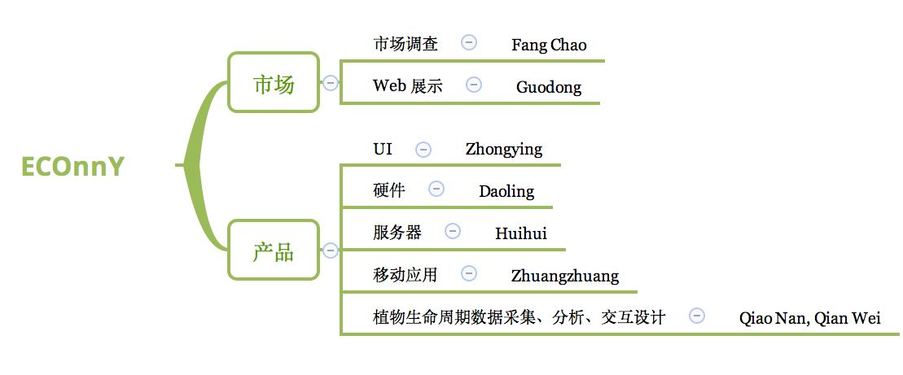
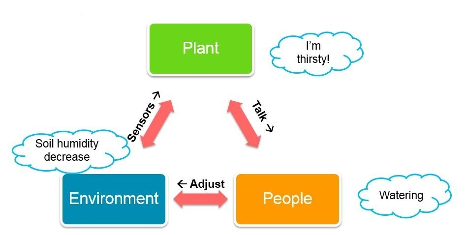
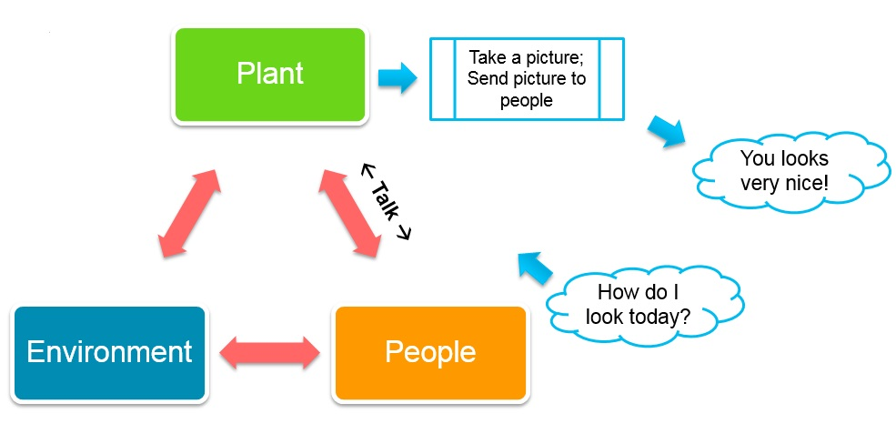
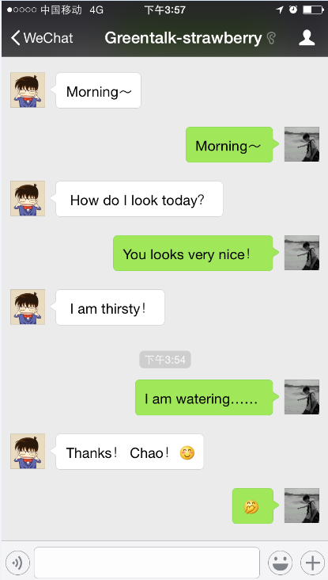
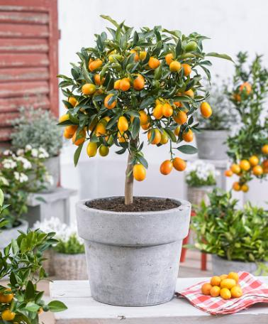
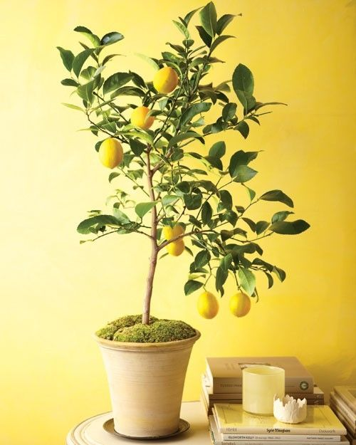

假如有一天，每个办公室、每个家都是一个
健康、有趣、可分享的自循环生态系统
ECOnnY是什么
ECOnnY是一个致力于提高室内办公趣味，建立自循环生态系统的团队。生态(ECO)和有趣(Funny)是我们始终坚持的产品定位。我们一直在思考，如何通过有趣的生态交互来改善人们每天生活的室内办公环境，放松心情，健康工作生活。
我们在做什么

我们了解到办公室里的同事们急切想改变办公环境，希望能在更健康，更有趣的环境下工作的夙愿；于是通过大量问卷调查，市场调研，我们最终选择金桔、柠檬、草莓作为我们的第一个培育对象。通过与专业农场的合作，我们研发的F系统会科学地采集室内果树的土壤湿度、周围环境温度、周围光照强度等一系列影响果树成长的数据。然后经过诸位中科院博士的算法分析，F系统将给你提供最科学的实时室内小型果树盆栽的养殖指导。
同时，ECOnnY会帮助你的植物朋友体检、自拍、说话，甚至让他加入到你的社交网络中来。



第一批候选植物

金桔-芸香科，属金柑。叶披针形至长椭圆形，5-9厘米长，全缘，叶柄稍有翅；花小，白色，芳香，1-3朵腋生，花瓣5，雄蕊20-25，子房5室；果椭圆形或倒卵形，长2.5-3.5厘米，金黄色。花期4-5月。果期7-9月。

柠檬-芸香科柑橘属小乔木植物，是一种水果。枝少刺或近于无刺，嫩叶及花芽暗紫红色，单花腋生或少花簇生，花萼杯状，子房近桶状或桶状，顶部略狭，柱头头状。果皮厚，通常粗糙，果椭圆形或卵形，果汁酸至甚酸，花期4-5月，果期9-11月。
草莓-多年生草本，高10-40厘米。茎低于叶或近相等。叶三出，小叶具短柄，质地较厚，倒卵形或菱形，稀几圆形，长3-7厘米，宽2-6厘米，顶端圆钝，基部阔楔形。聚合果大，直径达3厘米，鲜红色，宿存萼片直立，紧贴于果实；瘦果尖卵形，光滑。花期4-5月，果期6-7月。